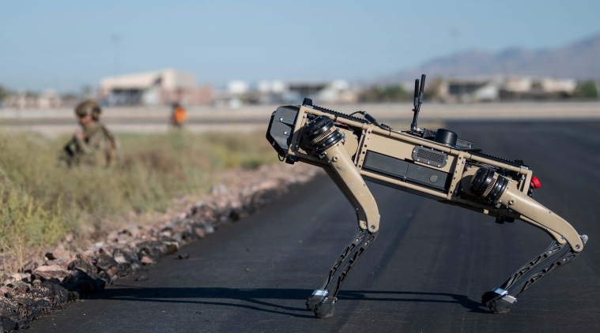

Do technologicznych horrorów z serialu ”Czarne Lustro” nieco nam jeszcze brakuje, ale dzięki amerykańskiemu przemysłowi zbrojnemu
sporą szansę na urzeczywistnienie się mają psy-roboty z odcinka ”Twardogłowy”. Zamiast jednak polować na ludzi, jak w dystopijnym świecie
z ekranu, mechaniczne czworonogi firmy GhostRobotics pracują jako zwiadowcy dla żołnierzy.
Vision 60 UGV, jak niezbyt poetycko nazwano urządzenia, uczestniczyły niedawno w ćwiczeniach w bazie lotniczej Nellis na pustyni Mojave.
Zebrani tam dziennikarze mogli przyjrzeć się nie tylko im, ale też innym ”nowinkom” technologicznym mającym stanowić wyposażenie
amerykańskiego wojska w najbliższych latach, a może i dekadach.
Podróżujące z żołnierzami na pokładzie samolotu C-130 czworonogie roboty opuściły maszynę przed ludźmi w celu ”zabezpieczenia perymetru” i wypatrzeniu ewentualnych zagrożeń – informują w notatce prasowej Amerykańskie Siły Lotnicze.
Psy-roboty stanowią element zaawansowanego systemu zarządzania polem walki ABMS (Advanced Battle Management System) na który przez 5 lat USA wydadzą 3,3 mld dolarów.
Jak tłumaczy to dział prasowy US Air Force, wykorzystuje on sztuczną inteligencję i prowadzoną na bieżąco analizę danych by wykrywać i zapobiegać zagrożeniom dla personelu wojskowego w kosmosie i potencjalnym atakom na terytorium USA.
Jak zwrócił uwagę Will Roper, asystent sekretarza Sił Lotniczych odpowiedzialny za zamówienia i logistykę, bez elektronicznego wsparcia urządzeń pozwalających syntetyzować olbrzymią ilość danych spływających z pola walki, żołnierze na froncie nie byliby ich w stanie w sensowny sposób wykorzystać.
- Zdolność oceny danych w sytuacji bojowej jest równie ważnym zasobem co paliwo do samolotów czy satelity. To po prostu część nowego teatru wojny – stwierdził Roper. A gdzie w tym miksie sprzętu jest miejsce dla robotów z czterema nogami?
- Psy zapewniają zwiad optyczny bezpośredniego terenu działań pozwalając żołnierzom pozostać bliżej ich samolotu – wyjaśnił dziennikarzom st. sierż. Lee Boston z 621 Grupy Reagowania Kryzysowego Sił Powietrznych.
Producent Vision 60 UGV zapewnia, że są one w stanie operować w każdym typie terenu nosząc na sobie dowolny zestaw czujników i przekaźników. Są zwyczajnie samodzielnie poruszającą się platformą na której montuje się urządzenia obserwacji i zwiadu określane charakterem misji.
- Zaletą naszego robota jest prostota jego budowy, co przekłada się na większą odporność i zwinność. Daje mu przewagę nad innymi robotami poruszającymi się na nogach, ale także nad tymi na platformach gąsienicowych. Naszych maszyn nic nie zatrzyma – GhostRobotics przekonuje na swojej stronie internetowej.